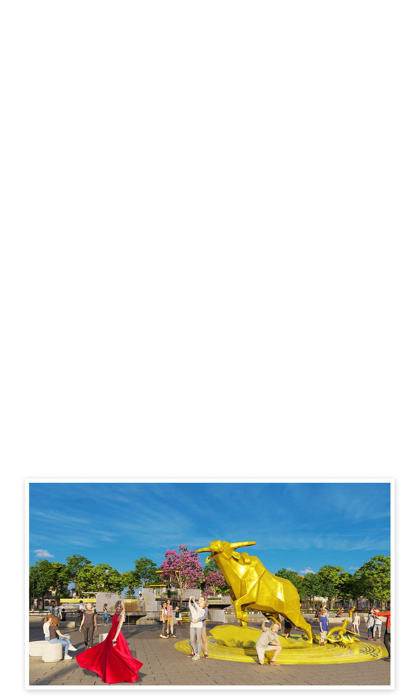
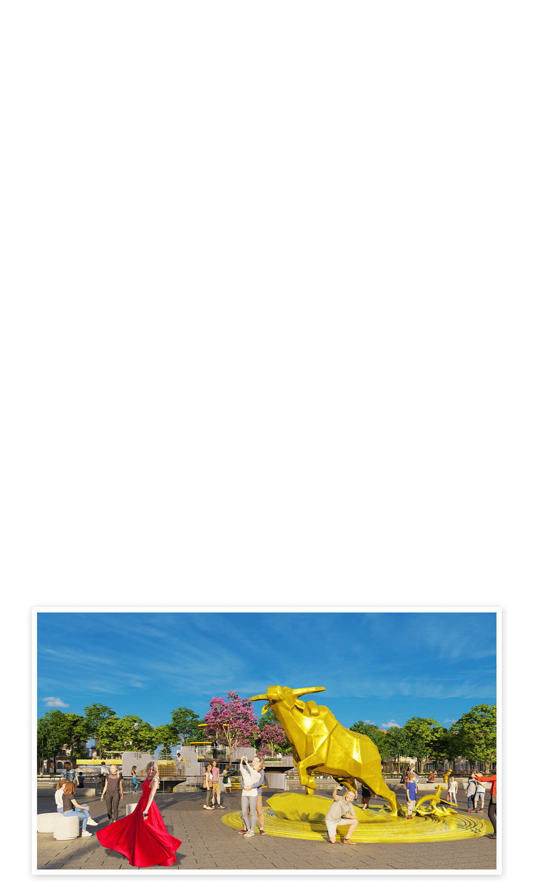

Vùng đất “cửa ngõ” phía Nam Hà Nội hội tụ nhiều lợi thế về kết nối giao
thông, phát triển kinh tế, cảnh quan thiên nhiên, di tích lịch sử văn hóa…
để trở thành tâm điểm đầu tư hấp dẫn miền Bắc.
Nằm giáp ranh Hà Nội, là đầu mối giao thông kết nối cửa ngõ phía Nam với các tỉnh Đồng bằng sông Hồng và khu vực Bắc Trung Bộ, Hà Nam là cầu nối quan trọng trong hành lang kinh tế Bắc - Nam. Tỉnh còn nằm trong liên kết vùng của tứ giác kinh tế Quảng Ninh - Hải Phòng - Hà Nội - Thanh Hóa, nơi có tốc độ tăng trưởng hàng đầu cả nước.
Tại toạ đàm "Bất động sản Hà Nam: Sẵn sàng cho một chu kỳ mới" tổ chức hồi cuối tháng 7, ông Nguyễn Văn Đính – Phó Chủ tịch Hiệp hội Bất động sản Việt Nam nhận định: Hà Nam có sức mạnh nội tại với nhiều lợi thế. Theo đó, vị trí chiến lược trong vùng kinh tế Thủ đô giúp tỉnh hưởng lợi từ nguồn nhân sự chất lượng cao, thị trường rộng lớn. Ngoài ra, Hà Nam còn nằm trên trục kinh tế Bắc – Nam với tiềm lực dồi dào. Nếu khai thác tốt lợi thế này sẽ giúp tỉnh tăng trưởng kinh tế, tăng cấp rất nhanh.
Theo quy hoạch đã được Thủ tướng Chính phủ phê duyệt, Hà Nam sẽ trở thành thành phố trực thuộc Trung ương vào năm 2050. Tỉnh được định hướng trở thành đô thị thông minh, hiện đại; là trung tâm hậu cần về công nghiệp, công nghệ cao, y tế, chăm sóc sức khỏe, giáo dục đào tạo, dịch vụ du lịch, thương mại của Vùng đồng bằng sông Hồng. Và hành trình tiến đến mục tiêu này đang ngày càng vững chãi.
Nằm giáp ranh Hà Nội, là đầu mối giao thông kết nối cửa ngõ phía Nam với các tỉnh Đồng bằng sông Hồng và khu vực Bắc Trung Bộ, Hà Nam là cầu nối quan trọng trong hành lang kinh tế Bắc - Nam. Tỉnh còn nằm trong liên kết vùng của tứ giác kinh tế Quảng Ninh - Hải Phòng - Hà Nội - Thanh Hóa, nơi có tốc độ tăng trưởng hàng đầu cả nước.
Tại toạ đàm "Bất động sản Hà Nam: Sẵn sàng cho một chu kỳ mới" tổ chức hồi cuối tháng 7, ông Nguyễn Văn Đính – Phó Chủ tịch Hiệp hội Bất động sản Việt Nam nhận định: Hà Nam có sức mạnh nội tại với nhiều lợi thế. Theo đó, vị trí chiến lược trong vùng kinh tế Thủ đô giúp tỉnh hưởng lợi từ nguồn nhân sự chất lượng cao, thị trường rộng lớn. Ngoài ra, Hà Nam còn nằm trên trục kinh tế Bắc – Nam với tiềm lực dồi dào. Nếu khai thác tốt lợi thế này sẽ giúp tỉnh tăng trưởng kinh tế, tăng cấp rất nhanh.
Theo quy hoạch đã được Thủ tướng Chính phủ phê duyệt, Hà Nam sẽ trở thành thành phố trực thuộc Trung ương vào năm 2050. Tỉnh được định hướng trở thành đô thị thông minh, hiện đại; là trung tâm hậu cần về công nghiệp, công nghệ cao, y tế, chăm sóc sức khỏe, giáo dục đào tạo, dịch vụ du lịch, thương mại của Vùng đồng bằng sông Hồng. Và hành trình tiến đến mục tiêu này đang ngày càng vững chãi.

Trong lịch sử, Hà Nam phát triển hệ thống giao thông rất sớm, đặc biệt là đường thủy. Sông Hồng, sông Đáy, sông Nhuệ, sông Châu,... đã trở thành những tuyến giao thông quan trọng của vùng đất cận kề kinh thành Thăng Long. Từ sông Đáy có thể qua sông Nhuệ vào sông Tô Lịch hoặc theo sông Châu ra sông Hồng để ngược lên Thăng Long và đi các tỉnh trong vùng.
Từ thế kỷ thứ X-XI, Hà Nam đã có con đường Thiên Lý đi qua. Đến thời Pháp thuộc, Quốc lộ 1A được xây dựng từ năm 1885, còn gọi là “đường cái” hay đường Xuyên Đông Dương, được đầu tư xây dựng với chất lượng cao thời bấy giờ. Từ năm 1905, tuyến đường sắt Lạng Sơn - Hà Nội - Vinh được hoàn thành và đi vào khai thác, sử dụng. Tuyến đường sắt qua địa phận Hà Nam dài 34 km, từ Cầu Giẽ (Duy Tiên) qua thị xã Phủ Lý đến huyện Bình Lục (giáp với Nam Định), có các ga Đồng Văn, Phủ Lý, Bình Lục và cầu Họ. Trong đó, ga Phủ Lý là đầu mối giao thương quan trọng nhất trên tuyến đường sắt qua Hà Nam.

Hà Nam xác định hạ tầng giao thông là yếu tố cốt lõi, chìa khóa thúc đẩy phát triển các khu công nghiệp, khu chế xuất, vùng nông lâm nghiệp, đặc biệt là phát triển du lịch, dịch vụ và bất động sản... Từ năm 2020 đến nay, Hà Nam đã đầu tư hàng chục nghìn tỷ đồng để xây dựng mới, nâng cấp các tuyến đường giao thông, đáp ứng nhu cầu phát triển kinh tế, vận chuyển hàng hóa, kết nối giao thương.
Về đường bộ, trên địa bàn tỉnh hiện có 8 tuyến quốc lộ gồm: Quốc lộ 1A, Quốc lộ 1 tuyến tránh thành phố Phủ Lý, Quốc lộ 21, Quốc lộ 21B, Quốc lộ 37B, Quốc lộ 38, Quốc lộ 38 tuyến tránh Hòa Mạc và Quốc lộ 38B. Đây là những cung đường giúp Hà Nam kết nối dễ dàng với các tỉnh thành: Hà Nội, Nam Định, Ninh Bình, Hưng Yên…
Trong thời gian tới, Hà Nam sẽ có thêm 4 tuyến cao tốc gồm: Cao tốc Bắc – Nam phía Đông (tuyến Pháp Vân – Cầu Giẽ – Ninh Bình); cao tốc Phủ Lý – Nam Định, cao tốc Hưng Yên - Thái Bình và đường Vành đai 5 Vùng Thủ đô. Đây là bước đột phá rất lớn về hạ tầng, góp phần mở rộng giao thương giữa Hà Nam với các khu vực lân cận trong Vùng kinh tế trọng điểm đồng bằng Bắc Bộ.
Đặc biệt, đoạn cao tốc Pháp Vân (Hà Nội) - Phú Thứ (Hà Nam) với 6 làn xe vừa được đề xuất nâng cấp thành 10-12 làn, trong đó đoạn Pháp Vân - vành đai 4 lên 12 làn xe, đoạn vành đai 4 - Phú Thứ lên 10 làn. Đồng thời, nút giao cao tốc 3 tầng Phú Thứ dự kiến hoàn thành vào năm 2025 sẽ kết nối cao tốc Bắc – Nam với đường vành đai 5 Vùng Thủ đô đi qua 8 tỉnh thành phố, cộng hưởng với các tuyến vành đai 3, 3.5, 4 giúp hoàn thiện hệ thống giao thông liên vùng và đón trọn dòng di chuyển của các phương tiện từ Hà Nội và các tỉnh miền Bắc đổ về Phủ Lý, Hà Nam. Trục đường phía Nam Hà Nội đi qua các điểm du lịch nổi tiếng như chùa Hương, khu du lịch Tam Chúc và nối tới Bái Đính (Ninh Bình) sẽ tạo nên tuyến du lịch tâm linh hấp dẫn du khách.
Bên cạnh các tuyến đường bộ, Hà Nam còn là một trong khoảng 20 tỉnh thành có tuyến đường sắt tốc độ cao Bắc - Nam chạy qua. Đây là một lợi thế rất lớn giúp kết nối Hà Nam (tại ga Phủ Lý) với cả nước.
Về đường thủy, Hà Nam là nơi hội tụ của 3 dòng sông: Châu Giang, Nhuệ và Đáy, tạo nên giá trị phong thủy cho vùng đất. Tỉnh có 196 km đường sông với hơn 20 dự án cảng sông. Đây là những điều kiện thuận lợi để địa phương phát triển vận tải đường thủy phục vụ trung chuyển hàng hóa.

Mảnh ghép cuối cùng trong bức tranh hạ tầng giao thông của vùng đất “núi Đọi sông Châu” là quy hoạch hàng không của Vùng Thủ đô, với định hướng xây dựng sân bay thứ 2 của Hà Nội tại huyện Ứng Hòa – Phú Xuyên, chỉ cách thành phố Phủ Lý khoảng 25 km. Việc tiếp cận dễ dàng với sân bay mới này trong tương lai sẽ giúp gia tăng khả năng kết nối của Hà Nam với cả nước, tạo đòn bẩy cho kinh tế phát triển.
Như vậy, Hà Nam là một trong số những địa phương hiếm hoi trên cả nước có khả năng phát triển đầy đủ các loại hình giao thông. Đây cũng là thế mạnh lớn của địa phương trong cuộc đua thu hút đầu tư, đặc biệt là phát triển các dự án trọng điểm.
Nắm giữ lợi thế chỉ cách Hà Nội chưa đầy 60km với 45 phút lái xe, Hà Nam là một trong những đô thị vệ tinh quan trọng có nhiều tiềm năng phát triển trong Vùng Thủ đô.
Đây là tỉnh có diện tích nhỏ thứ 2 cả nước (chỉ lớn hơn Bắc Ninh), dân số 886.000 người (2023), ít đơn vị hành chính nhưng vẫn đạt được những thành tựu đáng kể về kinh tế - xã hội, với tốc độ tăng trưởng ước đạt 9,41%, đứng thứ 5 vùng Đồng bằng sông Hồng và thứ 8 toàn quốc. Tổng thu ngân sách năm 2023 của tỉnh ước đạt trên 12.800 tỷ đồng, tương đương số thu ngân sách của 6 tỉnh thu ngân sách ít nhất cộng lại (Hà Giang, Tuyên Quang, Lai Châu, Cao Bằng, Điện Biên, Bắc Kạn). Riêng 6 tháng đầu năm nay, GRDP Hà Nam ước đạt 26.891 tỷ đồng, tăng 10,35% so với cùng kỳ năm 2023. Đây là mức tăng trưởng cao nhất kể từ năm 2021 trở lại đây, đứng đầu trong khu vực Đồng bằng sông Hồng và đứng thứ 4 toàn quốc.
“Tỉnh có diện tích nhỏ thứ 2 cả nước nhưng thực lực kinh tế của Hà Nam không hề nhỏ. Xét theo vùng, Hà Nam thuộc Vùng Thủ đô và vùng Đồng bằng sông Hồng - đều là những vùng kinh tế trọng điểm quốc gia. Trong tương lai, triển vọng phát triển của Hà Nam sẽ càng được nhân lên nhờ tầm nhìn của lãnh đạo cộng với cách tiếp cận phát triển mới của vùng và cả nước”.
PGS.TS Trần Đình Thiên,
nguyên Viện trưởng Viện Kinh tế Việt Nam.
Hà Nam là cầu nối giữa các tỉnh Nam đồng bằng sông Hồng với Thủ đô và các tỉnh miền núi phía Bắc. Đây cũng là thế mạnh để địa phương hút vốn đầu tư. Với mục tiêu trở thành một trong các trung tâm công nghiệp công nghệ cao, trong chiến lược phát triển kinh tế những năm gần đây, Hà Nam ưu tiên đẩy mạnh phát triển công nghiệp, đẩy nhanh tiến độ xây dựng hạ tầng các khu, cụm công nghiệp, đường giao thông.
Trên địa bàn tỉnh có khoảng 1.156 dự án đầu tư còn hiệu lực. Trong đó, có 369 dự án FDI và 787 dự án trong nước với tổng vốn đăng ký là hơn 5,4 tỷ USD và khoảng 169.000 tỉ đồng. Nhiều năm liền, Hà Nam luôn nằm trong top 10 - 15 tỉnh thành thu hút vốn đầu tư nước ngoài (FDI) tốt nhất cả nước.
Về động lực phát triển du lịch, Hà Nam có nguồn tài nguyên thiên nhiên dồi dào, nhiều danh lam thắng cảnh nổi tiếng đã được đầu tư và phát triển. Địa hình được bao bọc bởi sông Hồng ở phía Đông, sông Đáy ở phía Tây, sông Nhuệ ở phía Bắc, sông Ninh ở phía Nam, cùng những dãy núi trùng điệp ở mạn Kim Bảng đã tạo cho vùng đất này các đặc trưng về văn hóa lịch sử với nhiều trầm tích văn hóa lâu đời: những làng nghề, lễ hội truyền thống cùng nhiều di tích đền, chùa, nhà thờ cổ kính…
Những năm gần đây, Hà Nam đang dần trở thành điểm đến du lịch sinh thái nghỉ dưỡng, du lịch văn hóa gắn với du lịch tâm linh, vui chơi giải trí, thể thao. Danh hiệu “Điểm đến văn hóa địa phương hàng đầu thế giới năm 2023” do Tổ chức Du lịch thế giới trao tặng là động lực để Hà Nam ngày càng thu hút khách du lịch trong nước và quốc tế.
Dù sở hữu nhiều tiềm năng để phát triển nhưng nhiều năm qua, Hà Nam nói chung và Phủ Lý nói riêng vẫn còn khá mờ nhạt trên bản đồ bất động sản tại Việt Nam. Tỉnh thiếu vắng các khu đô thị lớn được đầu tư đồng bộ hạ tầng và tiện ích, đủ sức hút để kéo cư dân từ khắp nơi đến an cư lâu dài. Theo nhiều chuyên gia, thị trường địa ốc Hà Nam còn phát triển khá manh mún, quá tập trung vào phân khúc đất nền, bất động sản công nghiệp… Việc thiếu vắng những khu đô thị tầm cỡ khiến tỉnh không phát huy hết tiềm năng.
10 năm trở lại đây, Hà Nam đứng thứ 4 trong 11 tỉnh đồng bằng sông Hồng về tỷ lệ đô thị hóa (chỉ sau Quảng Ninh, Hải Phòng, Hà Nội). Trong khi tỷ lệ đô thị hóa cao nhưng chất lượng đô thị hóa tại Hà Nam lại chưa cao. Theo PGS. TS Trần Đình Thiên, cần tăng chất lượng đô thị, đẳng cấp đô thị của Hà Nam lên một tầm cao mới.
 

10 năm trở lại đây, Hà Nam đứng thứ 4 trong 11 tỉnh đồng bằng sông Hồng về tỷ lệ đô thị hóa (chỉ sau Quảng Ninh, Hải Phòng, Hà Nội). Trong khi tỷ lệ đô thị hóa cao nhưng chất lượng đô thị hóa tại Hà Nam lại chưa cao. Theo PGS. TS Trần Đình Thiên, cần tăng chất lượng đô thị, đẳng cấp đô thị của Hà Nam lên một tầm cao mới.
Tỉnh lỵ Hà Nam – TP Phủ Lý hiện là đô thị loại II với diện tích hơn 87km2. Trong bối cảnh trung tâm cũ của Phủ Lý đã hết quỹ đất, dư địa không còn nhiều, trung tâm hành chính mới của Hà Nam đang được quy hoạch tại phía Bắc sông Châu Giang. Sở hữu quỹ đất lớn cùng giao thông kết nối thuận lợi, đây là vị trí giàu tiềm năng để kiến tạo đại đô thị giúp thay đổi diện mạo Phủ Lý nói riêng và Hà Nam nói chung.
Không chỉ hưởng lợi từ các tuyến Quốc lộ, vành đai, cao tốc… huyết mạch kết nối liên Vùng, khu vực này còn được đầu tư các tuyến đường lớn, nhằm kết nối trung tâm Phủ Lý cũ với khu hành chính mới trong tương lai, như đường Điện Biên Phủ, Lê Công Thanh, Nguyễn Văn Linh hay Võ Nguyên Giáp. Nút giao Phú Thứ khi hoàn thành sẽ kết nối thẳng xuống đây, mở ra cơ hội phát triển rất lớn cho các dự án đô thị, BĐS tại khu vực.

Tận dụng cơ hội về dư địa phát triển bất động sản của địa phương, nhiều tập đoàn lớn đã bắt đầu kiến thiết các dự án lớn, trong đó có Sun Group với Đô thị nghỉ dưỡng Sun Urban City Phủ Lý. “Thành phố nghỉ dưỡng ngoại ô 1.001 tiện ích phía Nam Hà Nội” này có quy mô 420 ha được kỳ vọng sẽ trở thành đô thị kiểu mẫu đầu tiên của Hà Nam cũng như cả khu vực phía Bắc, tạo nên không gian sống văn minh, nhưng vẫn giữ trọn tinh hoa văn hóa của Hà Nam.
Đô thị nghỉ dưỡng Sun Urban City Phủ Lý tọa lạc tại tâm điểm kết nối Hà Nam với Hà Nội và các tỉnh đồng bằng Bắc Bộ. Với mật độ xây dựng chỉ 18%, dự án dành đến 200ha cho không gian cây xanh mặt nước và các tiện ích cảnh quan, tiêu biểu là 5 đại công viên lần đầu tiên xuất hiện tại Hà Nam như công viên Sun World 19,37 ha, công viên văn hóa 36,7 ha, công viên sinh thái 13 ha, công viên thể thao 22 ha, công viên lễ hội 8,9 ha... tạo nên không gian sống – nghỉ dưỡng đa sắc màu cho cư dân.

Ông Trương Quốc Huy, Chủ tịch UBND tỉnh Hà Nam đánh giá, đây không chỉ là một dự án nhà ở thông thường. Đô thị nghỉ dưỡng – Sun Urban City Phủ Lý sẽ tạo ra sự thay đổi lớn trong chuyển dịch cơ cấu kinh tế từ nông nghiệp sang kinh tế dịch vụ.
“Dự án đem lại nguồn thu cho tỉnh Hà Nam, từ đó đầu tư trở lại hệ thống giao thông, trường học, bênh viện và các tiện ích xã hội khác để nâng cao chất lượng sống cho người dân”, ông Huy cho hay.
“Sun Urban City Phủ Lý với quy mô 420ha là dự án đô thị lớn nhất từ trước đến nay ở Hà Nam, một dự án đa tiện ích, đa mục tiêu” .
Ông Trương Quốc Huy,
Chủ tịch UBND tỉnh Hà Nam.

Nối tiếp những điểm đến như Sa Pa, Phú Quốc, Đà Nẵng... Hà Nam sẽ là nơi tiếp theo trên hành trình "làm đẹp những vùng đất" của Sun Group. Đại diện Tập đoàn cho biết, một đô thị kiểu mẫu như Sun Urban City với hạ tầng đồng bộ và tiện ích hoàn chỉnh sẽ là lực đẩy quan trọng thực hiện khát vọng đưa Phủ Lý thành đô thị loại 1 vào năm 2030, đưa Hà Nam thành thành phố trực thuộc trung ương vào năm 2050.